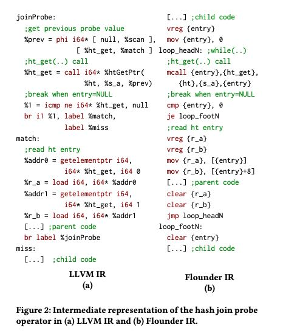
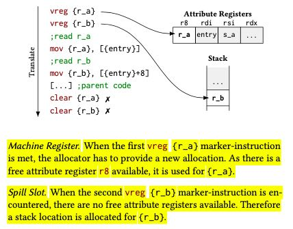
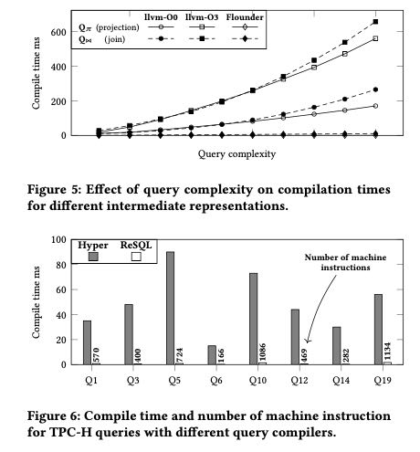

Low-Latency Compilation of SQL Queries to Machine Code
这篇文章主要将如何优化SQL引擎中JIT的编译时间，对比对象是LLVM（庞然大物），实验证明在编译速度上可以提升100x。不过注意这仅仅是编译速度，不是执行速度。
JIT编译通常分为两步：query -> IR, 然后是IR -> asm code. 其中第二个部分是最耗时的。作者他们使用的是自己内部系统的IR(Flounder IR)，不过这个IR和LLVM IR也没有太大差别，或者说只是形式上差别。

但是相比LLVM编译过程，这里的编译过程被简化不少，主要体现在两点上：CFG简化以及寄存器简化。下面是LLVM和Flounder IR在join probe节点上生成的IR代码：大体上是差不多的，但是在codegen阶段，Flounder有两个假设：首先control path已经被explicit地标记出来了，不用再做路径分析。其次可能使用到的寄存器地方已经使用虚拟寄存器 vreg 标记出来了，所以在寄存器上不用像LLVM那样使用live range splitting，直接使用最简单的追踪方法就好。如果寄存器不够使用的话，那么就去spill to stack. 从编译时间角度上来看，这样的确可以大大加快速度。
论文中给了分配寄存器的方法，其实相当简单就是在追踪寄存器使用的范围。

最后作者对比了和llvm -O0和-O3的编译速度，测试案例两类：一个是构造很多列进行project和join, 另外一个则是跑tpch. 还是要记住，这里对比的是编译时间。
